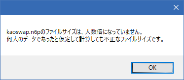

天翔記95 with PKの顔グラとなる kaoswap.n6p の内容を「閲覧・出力・取込」するためのツールです。
Visual Studio 2013 C++ ランタイム
x86版をインストールしたことが無い方はインストールしてください。
お手持ちのOSが64bitか32bitかには関わりなく、x86版のインストールが必要です。
.NET Framework 4.0以上。
KaoswapFaceImporter.exe が無い場合は、それも導入してください。
主に以下の３つの機能があります。
普通に起動すると、閲覧状態となります。
次のページの顔グラ一覧を表示
前のページの顔グラ一覧を表示
最初のページの顔グラ一覧を表示
最後のページの顔グラ一覧を表示
「o(オー)」のキーを押すと、顔グラ全部を出力出来ます。
(output)の頭文字。
kaoswap.n6p の 顔グラを全部「kao_3bit」フォルダへと出力
(すでにkao_3bitフォルダにファイルが存在したとしても容赦なく上書きするので注意!!
「i(アイ)」のキーを押すと、KaoswapFaceImporter.exe を実行できます。
「kao_3bit」フォルダにあるxxxx.bmp を kaoswap.n6p へと 取込
例えば、「KaoswapEx.n6p」は1332人用ではなく、1932人用ですが、
このKaoswapEx.n6pを、KaoswapFaceViewer.exeへとドラッグ＆ドロップすることで、KaoswapEx.n6pが閲覧の対象となります。
2932人用のKaoswapUx.n6pも同様です。

KaoSwapFaceImporter.exe を実行してみてください。
これによってサイズが正規化され、KaoSwapFaceViewer.exeが機能するようになります。
「kao_3bit」のxxxx.bmpの一覧と、「kaoswap.n6p」の中身は、
その管理上、全て一致していることが極めて望ましいため、
KaoswapFaceViewerでは、kaoswap.n6p ⇔ kao_3bit は全て転写するコマンドのみが用意されています。
１つ１つ顔グラを選択して変更するものは実装されていません。
そのようなものを実装すると、一見手軽なようでいて、その実は、全体の管理フローを大きく損なうからです。
こうすることで、「kao_3bit」の中身を変更すれば「kaoswap.n6p」はそれに自動的に従う、というフローを確立できます。
結果、「kao_24bit」⇒ 全自動減色 ⇒「kao_3bit」⇒全自動取込⇒「kaoswap.n6p」というように
顔グラ管理全体を、一方通行の単純なフローに出来ます。
変更する時は、「kao_24bit」だけ意識すれば良く、⇒ kao_24bitで変更した顔に対応する減色顔をkao_3bitへ転写、⇒ 自動で取り込んでkaoswap.n6pを更新、という単純な流れに出来ます。